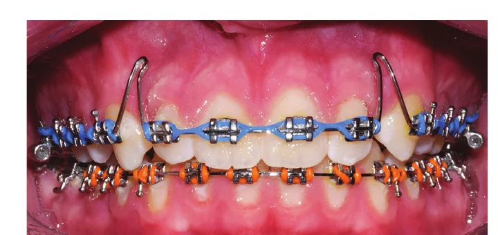

نسخه استخراجشده؛ ترجمه یا تأیید علمی انجام نشده است. وضعیت: captured
در مکانیک لوپ، منطق کاملاً برعکس اسلایدینگ است: دندان روی سیم نمیلغزد؛ خودِ سیم خم شده و باز میشود و دندانها را با خود میبرد.
چون هیچ لغزشی رخ نمیدهد، هیچ اصطکاکی هم در کار نیست — و همین مزیت اصلی این روش است.
| مزیت | هزینه |
|---|---|
| اصطکاک و بایندینگ حذف میشود | ساخت دقیق و وقتگیر |
| کنترل دقیق نسبت M/F | نیازمند تسلط بیومکانیکی |
| پیشبینیپذیری بیشتر انکوریج | ناراحتی بیشتر بافت نرم |
💡 ردیف دوم مهمترین است. در اسلایدینگ، نسبت گشتاور به نیرو تا حد زیادی از دست تو خارج است. در لوپ، با خمهایی که در دو سر آن میزنی، این نسبت را عمداً تعیین میکنی — یعنی نوع حرکت (تیپینگ، حرکت بدنهای، حرکت ریشه) را انتخاب میکنی نه اینکه امیدوار باشی.
👉 به همین دلیل لوپ در موارد انکوریج بحرانی و در دست درمانگر مسلط، همچنان جایگاه خود را دارد — با اینکه اسلایدینگ سادهتر و رایجتر است.

سه عامل، رفتار هر لوپی را تعیین میکنند:
💡 قاعدهی عملی که از عامل دوم میآید: لوپ متقارن در وسط فضا ← حرکت متقارن دو سگمنت. لوپ نزدیک به خلف ← گشتاور بیشتر روی خلف؛ خلف ناچار بدنهای حرکت میکند و قدام تیپ میکند، پس انکوریج خلفی بیشتر میشود. لوپ نزدیک به قدام برعکس عمل میکند و سهم جلو آمدن خلف را بیشتر میکند.
👉 یعنی صرفاً با جابهجا کردن محل لوپ روی سیم، میتوانی تصمیم بگیری که فضا با حرکت کدام واحد بسته شود — بدون هیچ دستگاه اضافهای.
⚠️ اما این دقت، بیهزینه نیست: لوپی که با یک میلیمتر خطا در موقعیت یا با خم نادرست ساخته شود، سیستم نیروی متفاوتی میدهد. اینجا دقت ساخت، بخشی از درمان است.
مکانیک سگمنتال، رویکردی است که مسئله را از پایه متفاوت میبیند.
در این رویکرد، قوس به واحدهای مجزا تقسیم میشود و میان آنها یک فنر یا کانتیلِوِر با سیستم نیروی معلوم قرار میگیرد.
💡 تفاوت بنیادی با سیم پیوسته همینجاست. در سیم پیوسته، هر دندان با همهی دندانهای دیگر در تعامل است و سیستم نیرو نامعین میشود — نمیتوان دقیقاً گفت چه نیرویی به کدام دندان میرسد. در مکانیک سگمنتال، تعداد نقاط تماس محدود است و میتوان نیرو را محاسبه کرد.
👉 قوس یوتیلیتی و کانتیلِوِر اینتروژن، شناختهشدهترین نمونههای این رویکردند: نیروی معلوم و قابل اندازهگیری، بهجای نیروی نامعین سیم پیوسته.
⚠️ به همین دلیل در اینتروژن واقعی ثنایاها — که در آن مقدار دقیق نیرو حیاتی است — مکانیک سگمنتال بر سیم پیوسته ترجیح دارد.
نوع سؤال: ساخت کلمه · 8 خانه
حروف منبع: ت · ی · ک · ن · ل · ا · و · ر